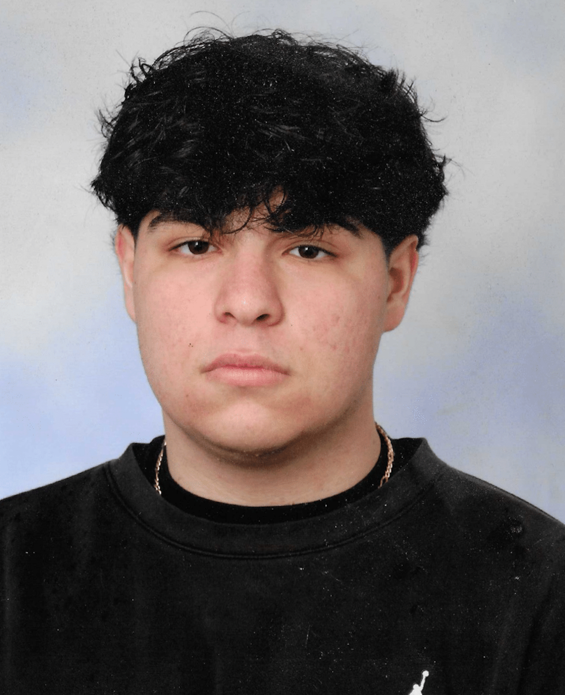
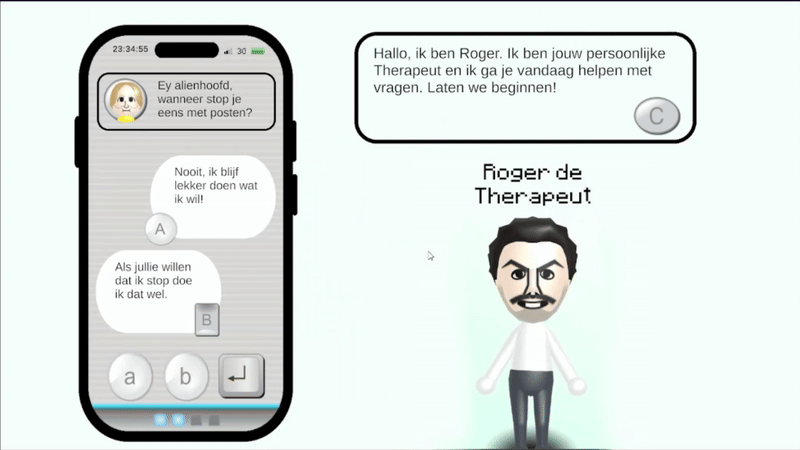

Hey! My name is Konstantinos Demertzidis
This is where I display all my projects and progress in coding!
Loading...

This is where I display all my projects and progress in coding!
Hi! My name is Konstantinos Demertzidis, I’m 18 years old and was born in Venlo, The Netherlands, with Greek nationality. I’m currently a sophomore at SintLucas Eindhoven, studying Game Development. I love bringing ideas to life through code and design, especially when it comes to creating engaging gameplay experiences. I’m good with C# and currently learning C++ at a beginner level. I’m also intermediate in HTML, CSS, and JavaScript, and have experience working with p5.js, which I find pretty cool for creating some simpler projects, I especially enjoy designing sound, UI, and experimenting with time based mechanics they’re the parts of development that truly excite me and allow me to be creative. Outside of game development, I love listening to music, going out for drinks with friends and family, and traveling whenever I can. My favorite music genre is Hip-Hop, and I enjoy both classic and modern artists. Some of my favorites include Kanye West, Travis Scott, Don Toliver, and Lil Tecca.

This is the first ever game i've worked on that has animations in it, It's inspired by Tekken, Street Fighter and Dragon Ball FighterZ. getting the animations to work was pretty simple by itself, but cutting them down into seperate part with a spritesheet you found online isn't the most fun thing to do. Overall i'm happy with how it turned out and i might just add my AI script to it someday, atleast when i learn how to add animations to AI's.

This is a game i'm currently working on, for the reason of time manipulation. In this game, you get to play as Dio Brando, the main villain in the Jojo's Bizarre Adventure show. Dio's ability is to stop time and therefore i chose to work on this project.

This was a game I made with a group of friends, it was for our global citizenship class. The assignment was to choose a current problem in the world. We chose cyberbullying. Here you play as a victim of cyberbullying, you have your therapist by your side who tells you if you could've answered better to your bully. Roger can also give the player tips for them to pick the right answer. This was an overall fun experience and helped me learn how to work with UI well.
I'd love to connect with you! Reach me through my E-mail adress or the links below:
Konstantinosdemertzidis0@gmail.com